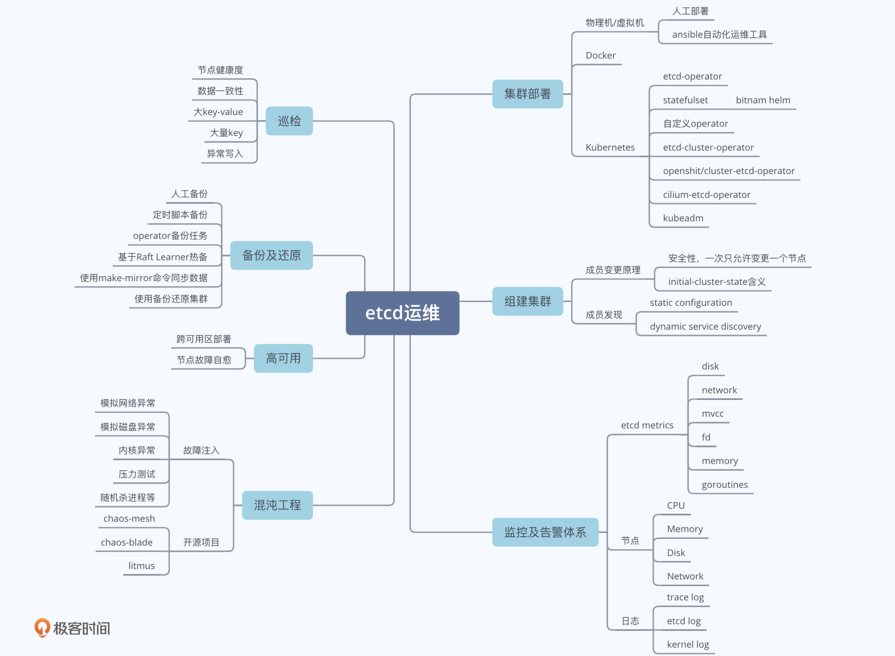
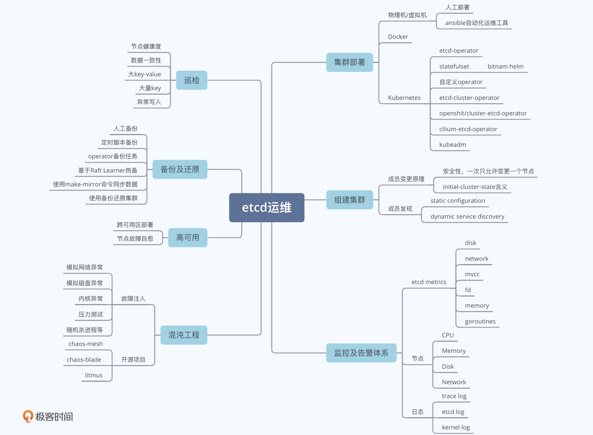
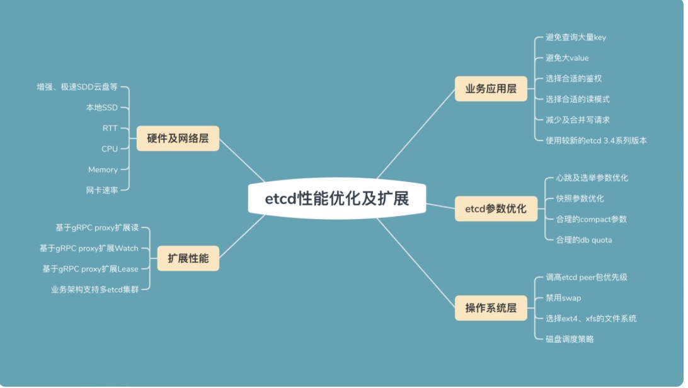
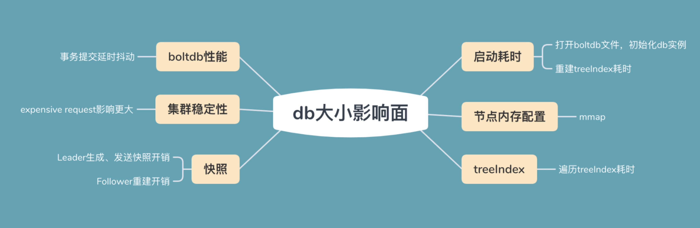

etcd常见运维故障


生命的意义是成为你自己！

// Mutex implements the sync Locker interface with etcd
type Mutex struct {
s *Session //上面的Session struct
pfx string //前缀
myKey string //key
myRev int64 //Revision
hdr *pb.ResponseHeader
}
func NewMutex(s *Session, pfx string) *Mutex {
return &Mutex{s, pfx + "/", "", -1, nil}
}
// Lock locks the mutex with a cancelable context. If the context is canceled
// while trying to acquire the lock, the mutex tries to clean its stale lock entry.
func (m *Mutex) Lock(ctx context.Context) error {
s := m.s //上面的Session struct
client := m.s.Client()
//m.pfx是前缀，比如"myresource/lock/"
//s.Lease()是一个64位的整数值，etcd v3引入了lease（租约）的概念，concurrency包基于lease封装了session，
//每一个客户端都有自己的lease，也就是说每个客户端都有一个唯一的64位整形值
//m.myKey类似于"myresource/lock/12345"
m.myKey = fmt.Sprintf("%s%x", m.pfx, s.Lease())
//etcdv3新引入的多键条件事务，替代了v2中Compare-And-put操作。
//etcdv3的多键条件事务的语意是先做一个比较（compare）操作，
//如果比较成立则执行一系列操作，如果比较不成立则执行另外一系列操作。
//接下来的这部分实现了如果不存在这个key，则将这个key写入到etcd，如果存在则读取这个key的值这样的功能。
//下面这一句，是构建了一个compare的条件，比较的是key的createRevision（createRevision是表示这个key创建时被分配的这个序号。
//当key不存在时，createRevision是0。），如果revision是0，则存入一个key，如果revision不为0，则读取这个key。
//revision是etcd一个全局的序列号,全局唯一且递增，每一个对etcd存储进行改动都会分配一个这个序号，在v2中叫index
cmp := v3.Compare(v3.CreateRevision(m.myKey), "=", 0) //cmp 比较Revision, 当key不存在时，createRevision是0。
// put self in lock waiters via myKey; oldest waiter holds lock
put := v3.OpPut(m.myKey, "", v3.WithLease(s.Lease()))
// reuse key in case this session already holds the lock
get := v3.OpGet(m.myKey)
// 如果revision为0，则存入，否则获取
resp, err := client.Txn(ctx).If(cmp).Then(put).Else(get).Commit()
if err != nil {
return err
}
// 本次操作的revision
m.myRev = resp.Header.Revision
// 操作失败，则获取else返回的值，即已有的revision
if !resp.Succeeded {
m.myRev = resp.Responses[0].GetResponseRange().Kvs[0].CreateRevision
}
ownerKey := resp.Responses[1].GetResponseRange().Kvs
if len(ownerKey) == 0 || ownerKey[0].CreateRevision == myRev {
m.hdr = resp.Header
return nil
//成功获取锁
}
//如果上面的code操作成功了，则myRev是当前客户端创建的key的revision值。
//waitDeletes等待匹配m.pfx （"/myresource/lock/"）这个前缀（可类比在这个目录下的）并且createRivision小于m.myRev-1所有key被删除
//如果没有比当前客户端创建的key的revision小的key，则当前客户端者获得锁
//如果有比它小的key则等待，比它小的被删除
hdr, werr = waitDeletes(ctx, client, m.pfx, m.myRev-1)
// release lock key if wait failed
if werr != nil {
m.Unlock(client.Ctx())
} else {
m.hdr = hdr
}
return werr
}

一个 key 的索引项内存开销跟你的 key 大小、保存的历史版本数、compact 策略有关。为了避免内存索引项占用过多的内存，key 的长度不应过长，同时你需要配置好合理的压缩策略
